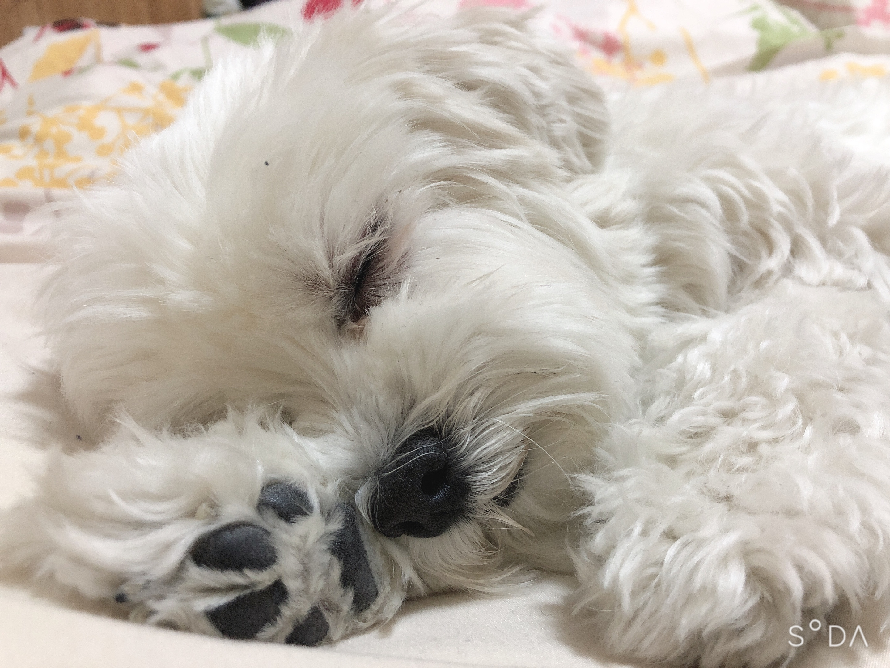

自己紹介
明治大学付属明治高等学校1年生の根本茉和です。趣味はダンス、音楽を聴くこと、絵を描くこと、お笑い芸人の動画を見ることなどです。特技はダンスとピアノです。ダンスは3歳から習い始めてずっと続けています。 現在EXPGというところに所属しています。EXILEやE-girlsE-girlsやGENERATIONSが憧れで、今はその方たちのライブバックダンサーをする事を目標に頑張っています。 EXPGにて素敵な企画に参加させていただいた時のYouTubeの動画サイト紹介のところから開けます。自分は小さすぎて見えないのですがぜひご覧ください。 家族構成は父、母、小学校六年生の妹が一人の四人家族です。そして、マルチーズのアリスとトイプードルのれおというワンちゃんを飼っています。(下記に画像あります) 二匹とも保護犬です。（話がそれてしまいますが、もしワンちゃんを飼おうとしている方がいらっしゃればペットショップに行かれる前にぜひ保護犬の保護団体のサイトをご覧ください。 ダンスの動画と同様にサイト紹介のところから私のおすすめの団体のサイトが開けます。）
サイト紹介
中務裕太さんEXPG東京校コラボダンス動画はこちら！！
保護権保護団体Dog shelterのホームページはこちら！！
好きな○○
- 色→紫、緑、赤
- スポーツ→ダンス、球技
- 番組→音楽番組やお笑い系
- 食べ物→果物全部
- キャラクター→アリエル、オラフ
最近の○○
- 嬉しかったこと→球技大会のクラスＴシャツに自分が書いたデザインが採用されたこと
- 楽しかったこと→友達と遊んだこと
- はまっていること→動画や画像編集、ギター
- やってみたいこと→EDMを自分で作ってみたい
好きな教科ランキング
- 理科
- 芸術（美術、音楽）
- 体育
写真


お問い合わせ
ダンス経験がある